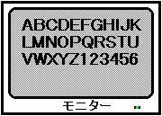
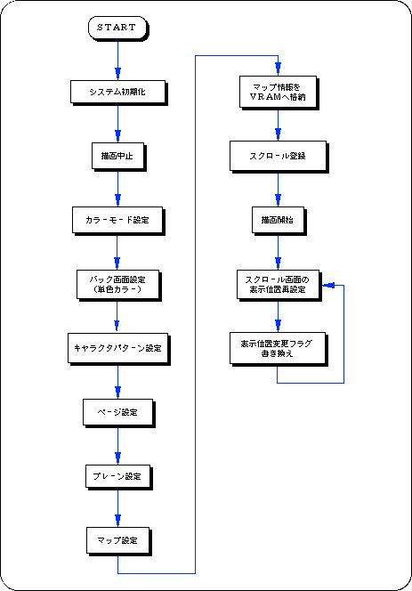
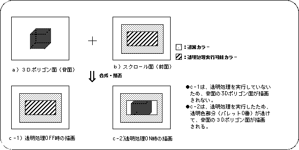
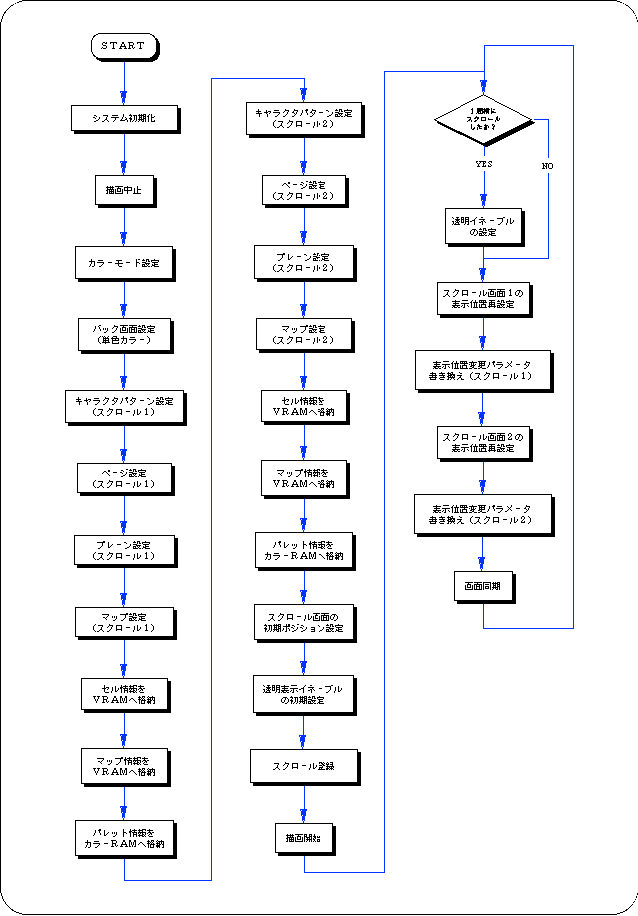
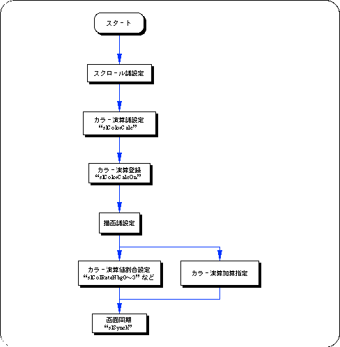
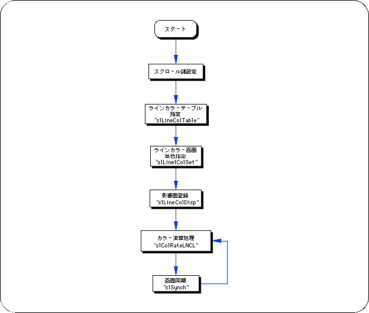

★SGL User's Manual
★PROGRAMMER'S TUTORIAL
★SGL User's Manual
★PROGRAMMER'S TUTORIAL
図8-25 ASCIIスクロールイメージ

ASCIIスクロールはシステム初期化状態で、128セル・256色で構成され、ノーマルスクロール画面“NBG0”を使用するように設定されています。 また、ASCIIスクロールデータは、それぞれ次のＲＡＭ領域中に格納されています。
キャラクタデータ：0x25e60000番地から2000H マップデータ ：0x25e76000番地から1000H パレットデータ ：0x25f00000番地から20H
 |
何らかの事情により上記領域中に他のスクロールデータを書き込んでしまった場合は、ASCIIスクロールはそれらのデータに置き換えられるため、デフォルトとは異なった（正しくない）状態で描画されます。 |
リスト8-7 sample_8_10_1：ASCIIスクロール
/*----------------------------------------------------------------------*/
/* Ascii Scroll */
/*----------------------------------------------------------------------*/
#include "sgl.h"
#include "ss_scrol.h"
#define NBG1_CEL_ADR VDP2_VRAM_B1
#define NBG1_MAP_ADR ( VDP2_VRAM_B1 + 0x18000 )
#define NBG1_COL_ADR VDP2_COLRAM
#define BACK_COL_ADR ( VDP2_VRAM_A1 + 0x1fffe )
void ss_main(void)
{
FIXED ascii_posx = SIPOSX , ascii_posy = SIPOSY;
slInitSystem(TV_320x224,NULL,1);
slTVOff();
slPrint("Sample program 8.10.1" , slLocate(9,2));
slColRAMMode(CRM16_1024);
slBack1ColSet((void *)BACK_COL_ADR , 0);
slCharNbg1(COL_TYPE_256 , CHAR_SIZE_1x1);
slPageNbg1((void *)NBG1_CEL_ADR , 0 , PNB_1WORD|CN_10BIT);
slPlaneNbg1(PL_SIZE_1x1);
slMapNbg1((void *)NBG1_MAP_ADR , (void *)NBG1_MAP_ADR , (void *)NBG1_MAP_ADR , (void *)NBG1_MAP_ADR);
Map2VRAM(ascii_map ,(void *)NBG1_MAP_ADR , 32 , 4 , 0 , 0);
slScrAutoDisp(NBG0ON | NBG1ON);
slTVOn();
while(1) {
slScrPosNbg1(ascii_posx , ascii_posy);
ascii_posx += POSX_UP;
slSynch();
}
}

＜図8-26 透明設定イメージモデル＞

| 透明処理を実行するスクロール面 | |||||
|---|---|---|---|---|---|
| NBG0 | NBG1 | NBG2 | NBG3 | RBG0 | |
| 代 入 値 | NBG0ON | NBG1ON | NBG2ON | NBG3ON | RBG0ON |
次のサンプルプログラム（リスト8-8）は、ＳＧＬライブラリ関数“slScrTransparent”を実際に使用してスクロールの透明カラー処理を実現したものです。
リスト8-8 sample_8_10_2：透明コードの制御
#include "sgl.h"
#include "ss_scrol.h"
#define NBG1_CEL_ADR VDP2_VRAM_B0
#define NBG1_MAP_ADR ( VDP2_VRAM_B0 + 0x10000 )
#define NBG1_COL_ADR ( VDP2_COLRAM + 0x00200 )
#define NBG2_CEL_ADR ( VDP2_VRAM_B1 + 0x02000 )
#define NBG2_MAP_ADR ( VDP2_VRAM_B1 + 0x12000 )
#define NBG2_COL_ADR ( VDP2_COLRAM + 0x00400 )
#define BACK_COL_ADR ( VDP2_VRAM_A1 + 0x1fffe )
void ss_main(void)
{
Uint16 trns_flg = NBG1ON ;
FIXED yama_posx = SIPOSX , yama_posy = SIPOSY ;
FIXED am2_posx = SIPOSX , am2_posy = SIPOSY ;
slInitSystem(TV_320x224,NULL,1);
slTVOff();
slPrint("Sample program 8.10.2" , slLocate(9,2)) ;
slColRAMMode(CRM16_1024) ;
slBack1ColSet((void *)BACK_COL_ADR , 0) ;
slCharNbg1(COL_TYPE_256 , CHAR_SIZE_1x1);
slPageNbg1((void *)NBG1_CEL_ADR , 0 , PNB_1WORD|CN_10BIT);
slPlaneNbg1(PL_SIZE_1x1);
slMapNbg1((void *)NBG1_MAP_ADR , (void *)NBG1_MAP_ADR , (void *)NBG1_MAP_ADR , (void *)NBG1_MAP_ADR);
Cel2VRAM(am2_cel , (void *)NBG1_CEL_ADR , 16000) ;
Map2VRAM(am2_map , (void *)NBG1_MAP_ADR , 32 , 32 , 1 , 0) ;
Pal2CRAM(am2_pal , (void *)NBG1_COL_ADR , 256) ;
slCharNbg2(COL_TYPE_256 , CHAR_SIZE_1x1) ;
slPageNbg2((void *)NBG2_CEL_ADR , 0 , PNB_1WORD|CN_12BIT);
slPlaneNbg2(PL_SIZE_1x1);
slMapNbg2((void *)NBG2_MAP_ADR , (void *)NBG2_MAP_ADR , (void *)NBG2_MAP_ADR , (void *)NBG2_MAP_ADR);
Cel2VRAM(yama_cel , (void *)NBG2_CEL_ADR , 31808) ;
Map2VRAM(yama_map , (void *)NBG2_MAP_ADR , 32 , 16 , 2 , 256) ;
Pal2CRAM(yama_pal , (void *)NBG2_COL_ADR , 256) ;
slScrPosNbg2(yama_posx , yama_posy) ;
slScrPosNbg1(am2_posx , am2_posy) ;
slScrTransparent(trns_flg) ;
slScrAutoDisp(NBG0ON | NBG1ON | NBG2ON) ;
slTVOn();
while(1)
{
if(yama_posx >= (SX + SIPOSX))
{
if(trns_flg == NBG1ON)
trns_flg = 0 ;
else
trns_flg = NBG1ON ;
yama_posx = SIPOSX ;
slScrTransparent(trns_flg) ;
}
slScrPosNbg2(yama_posx , yama_posy) ;
yama_posx += POSX_UP ;
slScrPosNbg1(am2_posx , am2_posy) ;
am2_posy += POSY_UP ;
slSynch();
}
}

カラー演算処理を行うには次の手順を踏む必要があります。
パラメータには、使用するカラー演算処理制御に対応した下図の値を代入します。
パラメータの詳細は、“HARDWARE MANUAL vol.2 : VDP2 ユーザーズマニュアル第12章カラー演算”を参照してください。
図8-27 “slColorCalc”のパラメータ代入値（flag）
● ColorCalc代入値 ● 演算方法 ：[CC_RATE | CC_ADD] | 演算指定画像 ：[CC_TOP | CC_2ND] | 拡張カラー演算 ：[CC_EXT ] | 登録面 ：[NBG0ON | NBG1ON | NBG2ON | NBG3ON | RBG0ON | LNCLON | SPRON ] |
割合で加算 ：TOP画像と2ND画像の演算比率を指定してカラー演算（CC_RATE） そのまま加算：TOP画像と2ND画像の単純な加算値でカラー演算（CC_ADD）
| カラー演算を実行するスクロール面 | |||||||
|---|---|---|---|---|---|---|---|
| NBG0 | NBG1 | NBG2 | NBG3 | RGB0 | LNCL | SPRITE | |
| 代 入 値 | NBG0ON | NBG1ON | NBG2ON | NBG3ON | RBG0ON | LNCLON | SPRITEON |
ただし、カラー演算に加算方式を採択している場合は、比率指定は意味を持ちません。

ラインカラー画面の使用には、次の手順を踏む必要があります。
ラインカラー画面を単色使用したい場合は、関数“slLine1ColSet”を使用してください。
| 登録するスクロール面 | |||||
|---|---|---|---|---|---|
| NBG0 | NBG1 | NBG2 | NBG3 | RBG0 | |
| 代 入 値 | NBG0ON | NBG1ON | NBG2ON | NBG3ON | RBG0ON |

| 登録するスクロール面 | |||||||
|---|---|---|---|---|---|---|---|
| NBG0 | NBG1 | NBG2 | NBG3 | RBG0 | BACK | SPRITE | |
| 代 入 値 | NBG0ON | NBG1ON | NBG2ON | NBG3ON | RBG0ON | BACKON | SPRON |
★SGL User's Manual
★PROGRAMMER'S TUTORIAL